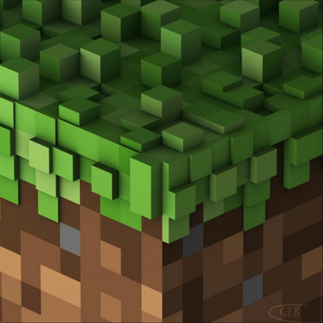

Stuff I Love!
~ Feel free to explore my favorite pieces of media!

The game that never really ends
Minecraft is one of those games I keep coming back to no matter how many years pass. There is no real goal pushing you forward, and that is exactly the magic: you spawn in a random world, look at the horizon and decide for yourself what today is going to be about.
Some days it is a cozy little wooden cabin by a lake. Other days it is a three-week project to build a castle that will never be finished. The freedom is huge, but the game is clever enough to give you small reasons to keep going: a cave you have not explored, a village to trade with, a biome you have never seen.
And then there is the soundtrack. C418's music is simply magical. Tracks like Sweden, Wet Hands and Subwoofer Lullaby show up quietly while you are mining or watching the sunset, and they turn ordinary moments into something nostalgic. It is the kind of music that feels like a memory even the first time you hear it.
Survival mode is where the game really shines for me. The first night is always tense, digging a hole in a hill and waiting for the sun while zombies groan outside. Getting your first diamonds, building a Nether portal, finding a stronghold and finally facing the Ender Dragon gives a real sense of progress, even though nobody ever told you to do any of it.
Creative mode is the opposite: no danger, infinite blocks, pure imagination. Redstone deserves its own mention too, because people have built working computers out of it, which is honestly insane.
It is not perfect. Some updates took ages, combat is still a bit clunky and the late game can feel empty if you play alone. But with friends, mods and texture packs, it becomes a completely different game every time.
For me, Minecraft is less a game and more a place: a blocky little world I can always return to when I want to relax, create something or just listen to the rain.
2D, but somehow endless
People call Terraria "2D Minecraft", but after a few hours it becomes clear it is something else entirely. Building is still important, but the heart of the game is exploration, bosses and loot, lots and lots of loot.
Every world starts small: a copper pickaxe, a guide who barely helps and a slime bouncing at you. Then you dig down, find your first chest, craft better gear, and suddenly you are fighting the Eye of Cthulhu under a blood moon. The progression is so satisfying because each boss unlocks something new to chase.
Hardmode is the moment the game shows its true size. The world changes, the Hallow and the corruption start spreading, and enemies you could ignore before are now dangerous. It feels like a whole second game hidden inside the first one.
The pixel art is gorgeous, the biomes are full of personality and the music fits every place perfectly, from the calm overworld day theme to the chaos of the boss fights. NPCs moving into the houses you build make your base feel alive.
The amount of weapons and items is ridiculous in the best way, and the developers kept giving free updates for years. Playing with friends is chaotic fun, especially when someone accidentally summons a boss at the worst moment.
A true classic that I recommend to anyone who likes adventure with a bit of grind.
Anime list is empty right now! 🐾
Series list is empty right now! 🐾